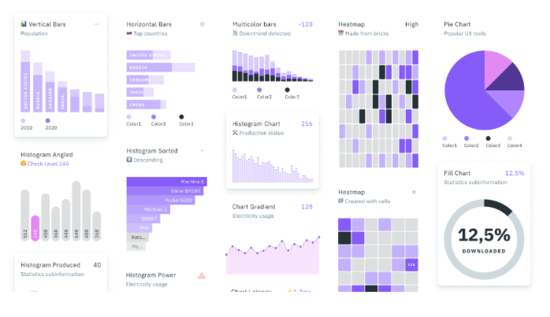
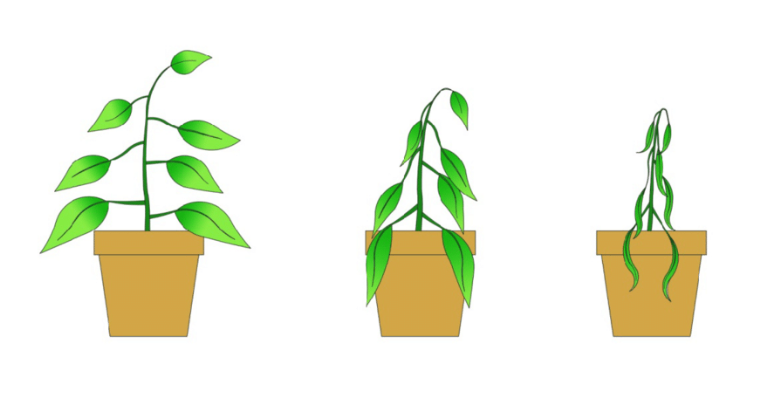
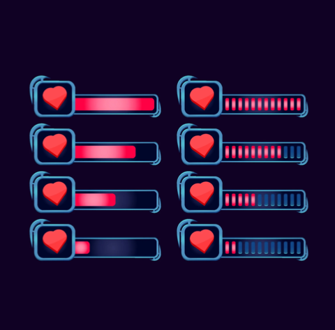

Human-Computer Interaction Project - Group Citrus 🍊
This website contains updates on Group Citrus' HCI project centered around personal budgeting and expense tracking. It will receive an update for every assignment, summarizing our key findings and progress points.
💻 Group members:
Angela Wei
Su Hnin Pwint
Yinan Qian
Mijael Maratuech Seminario
Most recent update will be at the top.
🔎 Update #3 (10/11/2021): HMW's, solution brainstorming, and assumption testing
Developing HMW's:
After developing our POVs based on our empathy mapping, we set out to identify key pain points and think about possible ways to address them via "How might we?" statements. After some brainstorming, we came up with a few, including:
How might we be able to provide a system that could show a breakdown of their spendings?
How might we factor time into a budgeting solution?
How might we represent users’ spending holistically to show them useful information?
How might we be able to use gamification theory to motivate the user by unlocking achievements?
Solution brainstorming:
Based on a few HMW statements, we then brainstormed multiple solutions associated with each. We compiled this activity in a Miro board:
As it can be noted above, we voted on all the solutions we thought had some potential, and we arrived at the following two:
Represent savings/expenses concepts (e.g. bills, deposits, transactions, etc.) through real-life objects, using analogies and metaphors throughout our solution, in order to appraoach the problem via gamification.
Auto-generate example paths of action for users to gain interest in at least one structured approach to savings and expense tracking.
Assumption testing & insights:
Once we had come up with our two solutions, we proceeded to identify the assumptions that were implicitly behind them. Some of these assumptions included:
Tangible objects will be understood as the abstract concepts we assign them to.
Users can understand the trends of their spending patterns by looking at visualizations (they need basic understanding of graphs, charts).
To test these assumptions, we thought it would be useful to come up with a set of slides that visualize some of the concepts they involve. We then showed them to a few subjects (different from our interviewees) and asked a few of the following questions to gather their reactions, feelings, and thoughts on them -- when related to savings/expenses:
What do these images represent to you? What do you feel when you see this image?
What visualization would you imagine your expenses being presented as? What type of information would be shown?
How would you interpret this graphic? How easy or difficult is it to understand?
These are some of the images that were shown to the subjects:
Example data visualizations.Analogy representation/visualization.Status bar visualization.
Some of the insights we gathered from our assumption testing were the following:
Users overall seemed to prefer the quantifiable character of standard data visualizations. They found nalogical representations as "less serious" and not as useful.
A specific user pointed out that the transitions between analogical subjects are not as nuanced; stages are discrete instead of continuous.
Pie charts were preferred for conclusions (e.g. end of term), while gradient charts and heat maps were preferred for trends.
Other opinions aside, gamified visualizations did indeed provide feelings of accomplishment, success, growth that were not necessarily as emphasized by standard visualizations.
Next steps:
We should dig deeper into the sense of security and control given by trend-based visualizations.
We should emphasize nuanced, continuous, and quantifiable visualizations as part of our solution.
Considering gamified visualizations evoke feelings of things not being as serious, we should be mindful of how we present our solution to the users.
🔎 Update #2 (10/04/2021): Interview iteration and empathy mapping
Revised interview process:
We modified our research questions to dig deeper into our research topic. This time, we wanted to focus more on the pros and cons experienced by potential users of existing expense tracking methods. We delineated our plan to gather more information on motivations, concerns, and desires. Some of the questions included:
Are you motivated to save money?
What do you seek from tracking your expenses?
Are there any aspects you would change about your current method of tracking expenses?
Empathy maps & POVs:
After the interviews, we did empathy maps for every user, where we focused on both the statements they made explicit to us, as well as our inferences.
User 2 empathy map.User 5 empathy map.
We then compiled them all under a single Miro board. With that, we gathered both individual and general takeaways, all of which helped us form some points of view.
Compiled empathy maps.Takeaway maps.
And with those, we synthesized a single POV from all users:
We met six users of different age ranges and financial situations.
We were amazed to realize the nuances of their spending habits and goals that their current budgeting methods do not account for.
It would be game changing if we created a holistic approach towards budgeting that doesn’t analyze their current financial situation, but also helps them along their journey towards reaching their short and long term financial goals.
Next steps:
Explore gamification as a way to keep the average user engaged in the act of saving.
Research existing competitors relating to this sphere: wish list apps, goal tracking platforms.
Narrow down our target audience.
Brainstorm concrete solutions based on our user insights.
🔎 Update #1 (09/28/2021): Initial planning and first interviews
Domain of interest & goals:
Our area of choice is budgeting and expense tracking. We are paying special attention to the different methods users have to track their spending and set their saving goals. We want to understand what kind of expense tracking or budgeting solution fits most users, and why. In whatever solution we build, we want to achieve a balance that can be welcoming to most people, but that may also appeal to users with extraordinary needs.
Key (preliminary) assumptions:
People with no experience with them can feel overwhelmed by large, feature-rich expense tracking and budgeting applications.
Users do not want to spend more time tracking their expenses than is necessary -- ironically, time is money!
There is a middle-ground to be found between the wants of casual and extreme expense-tracker users, where the underlying motivations behind most people's need for budgeting guidance can be addressed.
Interview planning:
The interviews were conducted during approximately 30 minutes, both through in-person and virtual means. When one person conducted the user interview another team member took notes. We tried to keep the exploratory character of the conversations open, and focused on the interests of the interviewee. We sought to get an accurate picture of their motivations behind budgeting and expense tracking, and their tried and tested methods (if any).
Key takeaways:
Users want a simplified breakdown of their financial expenses. Some may prefer detail, but others seek flexibility.
Users may need different insights from their expense tracking or budgeting service depending on the status of their income streams (stable v.s. unstable).
Extreme users may not always use aids consistently, but their unique needs should be understood to allow them to track expenses without constant commitment.
Some common 'contexts' for expense tracking that cause the most concern are vacationing and food.
Next steps:
Iterate on interview questions and rephrase them to more open ended ones that let us hear about the user stories.
Narrow down target users from casual and extreme users to gain a clearer understanding of the overall user profile.
Identify the minimum necessary information that any expense tracker needs to attract the largest number of users. Iterate on our findings.
{kind=link}
{kind=link}
{kind=link}
{kind=link}
{kind=link}
{kind=link}
{kind=link}
{kind=link}